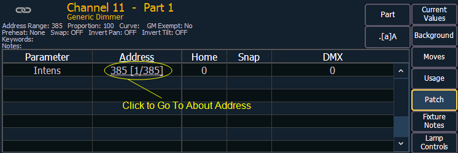

[About] Channel
Press [About] to put the CIA into About mode. When a channel is selected, the information below is displayed. You can select the information you wish to view from the buttons located on the right side of the CIA. The buttons are:
{Current Value} displays information that indicates:
- Channel number
- Device Type
- Most recent intensity move (cue number)
- Next intensity move
- What the channel is inhibited by (if anything)
- Keywords
- Notes
- A list of all parameters on the channel showing the current value and its source, the DMX value, the absolute value, delay and timing information, marking information, and any parked values.
{Background} displays similar information:
- Channel number
- Device Type
- Keywords
- Notes
- A list of all parameters on the channel showing the background value and its source, which shows what the parameters will go to if the current control source is removed. The background data will be represented by the standard color coding scheme.
{Moves} displays information that shows:
- Parameters
- Previous move in the cue list that currently has ownership
- Value of the previous move (preset, palette, or absolute data)
- Next move
- Value of the next move (preset, palette, or absolute data)
{Usage} displays information on how the channel is used, such as:
- Maximum Intensity
- Cue lists it is used in
- Total number of cues it appears in (based on intensity)
- Total number of intensity moves
- List of submasters that include the channel
- List of cues that have move instructions for the channel
- List of cues with dark moves for the channel
- List of cues that the channel is active in
- List of groups that include the channel
Note: While in the {Usage} screen for About Channel, if another channel is selected, you will need to hit the {Refresh Usage} button to see the information for the new channel.
{Patch} displays the following information:
- Address range
- Proportional patch level
- Curve (if any)
- GM exempt
- Preheat information (if any)
- Swap/invert pan/tilt status
- Keywords
- Notes
- List of all parameter values with their address, home value, snap parameter, DMX value, and parked value (if any)

{Fixture Notes} displays information found in the fixture library such as:
- Revision Number
- Release Date
- Alternate Names
- Usage Notes
{Lamp Controls} displays controls for the lamp, available RDM commands, or other parameters of the device (if it is a moving light).